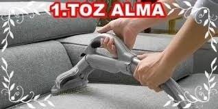
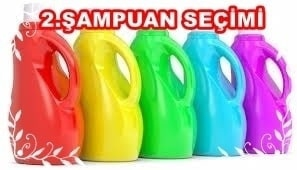
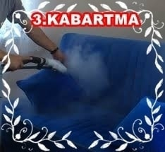
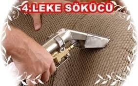
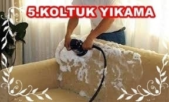
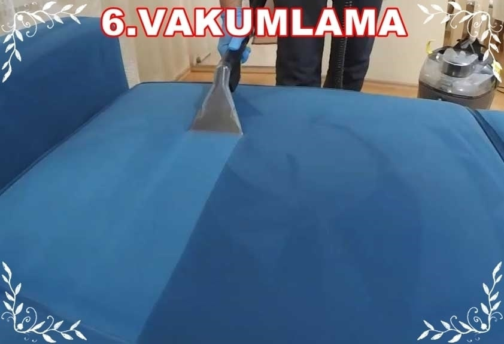

1. Koltuklarınız ilk önce emiş gücü yüksek sanayi tipi makinamızla tozlarından arındırmak için vakumlanarak süpürülür. (Yıkama sırasında koltuk ıslatılacak olmasından dolayı bu kir ve tozların daha da yapışmasının önüne geçebilmek için uygulanan bir yöntemdir.)
2. Daha sonra koltuk kumaşı incelenerek koltuk yıkama şampunanı şeçilir. (Her kumaşa aynı deterjan kullanılmaz aksi takdirde koltuğun kumaşına zarar verebilir.)
3. Daha sonra koltukların kumaşına göre hazırlanan özel karışımlı koltuk yıkama şampuanı suyla karıştırılarak spreyleme yöntemi ile hafifçe ıslatılarak kirlerin ve lekelerin yumuşatılması sağlanır.
4. Koltuk yıkama işlemine başlamadan önce aşırı kirli ve lekeli kısımlara leke sökücü özelliği olan kendi imalatımız şampuan lokal olarak uygulanır.
5. Artık koltuk yıkama işlemine geçebiliriz. Bu işlemde koltuğun kumaş olan kısmının tamamını döner uçlu fırça makinesiyle fırçalanarak köpürtülür ve kirlerin kabarması sağlanır.
6. Kirleri kabaran koltuğu 3 motorlu sanayi tipi büyük koltuk yıkama makinesiyle kirlerinden arınana kadar vakumlayarak pis ve kirli suyunu çekerek koltuk temizleme işlemini yaparız.
7. Daha sonra koltuğun tamamına saf su verilerek vakumlanıp durulanır ve hijyenik olması sağlanır.